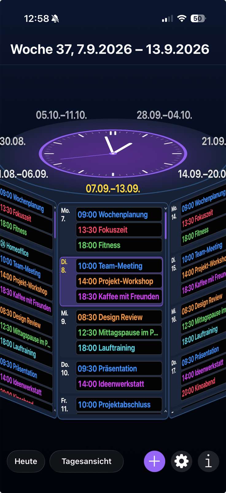
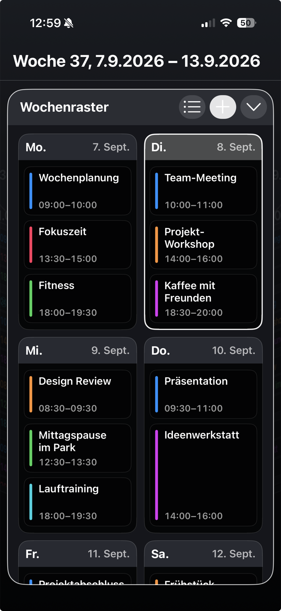

Drehen statt blättern
Mit Schwung durch die Zeit – schnell in die Zukunft, präzise zum gewünschten Tag.
Apple-Kalender. Neu gedreht.
DaySpin verwandelt deine Termine in einen drehbaren Tages- und Wochenkalender – modern, schnell und direkt mit deinen Apple-Systemkalendern verbunden.
Apple Calendar. With a new spin.
DaySpin turns your events into a rotating daily and weekly calendar – modern, fast, and connected directly to your Apple system calendars.
DaySpin auf dem iPhone
Echte Ansichten aus DaySpin, gefüllt mit neutralen Demo-Terminen: in unterschiedlichen Farben, in Bewegung und als klare Wochenansicht.
DaySpin on iPhone
Real DaySpin views filled with neutral demo events: in different color themes, in motion, and as a clear weekly view.


Dein Stil. Deine Sicht.
DaySpin passt sich an deinen Alltag an – ohne den Kalender unnötig kompliziert zu machen.
Alle sichtbaren Termine sind eigens erstellte Beispieldaten.
Your style. Your view.
DaySpin adapts to your day without making your calendar unnecessarily complicated.
Every visible event was created solely as demo content.
Ein Kalender, der Spaß macht
Wische durch Tage und Wochen, bremse den Zylinder mit dem Finger und öffne deine Termine in einer klaren Vollbildansicht.
Mit Schwung durch die Zeit – schnell in die Zukunft, präzise zum gewünschten Tag.
Wechsle zwischen detaillierter Tagesfläche, Wochenzylinder, Liste und zweispaltiger Wochenansicht.
Termine lesen, hinzufügen und bearbeiten – direkt in den Kalendern, die auf deinem iPhone eingerichtet sind.
A calendar that feels fun
Swipe through days and weeks, stop the cylinder with your finger, and open your events in a clean full-screen view.
Move through time with momentum – fast into the future, precise when selecting a day.
Switch between the detailed daily face, weekly cylinder, agenda list, and two-column week grid.
View, add, and edit events directly in the calendars configured on your iPhone.
Entdecke DaySpin auf deinem iPhone.
Discover DaySpin on your iPhone.